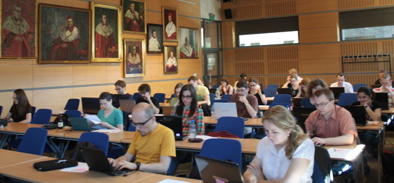

Krakow Bootcamp Experience
On the weekend of 18th and 19th May Krakow saw the first Software Carpentry bootcamp. The main organiser was Damian Marchewka from the PhD students' association at the Jagiellonian University. Karin Lagesen came from Oslo to co-teach with me, and four local helpers: Eryk Ciepiela, Maciej Czuchry, Klemens Noga from ACC Cyfronet and Leszek Tarkowski from Infotraining provided great support throughout the whole bootcamp. There were 28 attendees - most of them postgraduate students and several faculty members. They represented a range of disciplines from mathematics and theoretical physics to biology, genetics and medicine.

The bootcamp was widely advertised across the whole Jagiellonian University and we decided to adjust the material to the beginner level. The advert explicitly listed the modules which were to be covered (shell, Make, Python and version control) in hope that those signing up would know what to expect and that the whole group would represent similar computing skills. Yet, the pre-event questionnaire still showed differences within the attendees' level of knowledge and experience. There were quite advanced Fortran and C programmers but there were also learners who were not familiar at all with programming or shell. Even though only about a half of the attendees filled in the questionnaire, having a general overview turned out to be very helpful in preparations for the bootcamp.
Everything kicked off on Saturday morning and almost immediately we bumped into issues with slow network. The first thing which the attendees were asked to do was to clone the bootcamp branch from the GitHub repository. For very few it worked seamlessly. For many the cloning process lasted ages so they either got the bootcamp materials by downloading the ZIP file from GitHub or from USB sticks distributed by those who were lucky enough to download or clone the materials successfully. On Day 2 Leszek, one of the helpers, provided his own 3G router as a back-up network to be used for the version control module (when all learners would simultaneously connect to BitBucket). Eventually, we managed to use the local network but knowing that there was an alternative gave us a peace of mind. Another issue that emerged very quickly was related to using Git on Cygwin. When attempting to clone the bootcamp branch from the GitHub repository, the attendees were getting an SSL certificate error. Again the helpers, Klemens and Maciej, found the solutions (helpful if anyone decides to use Cygwin...I'll personally look for alternatives next time): either add a command setting up an environmental variable (env GIT_SSL_NO_VERIFY=true) to "git clone" or (which is a recommended approach) install a Cygwin package "ca-certificates".
Once the last (first?) minute panic was over, Karin started teaching shell. Despite all initial problems, we fell only 10 minutes behind the original schedule. Contingency planning is a good habit to have for developing a bootcamp teaching agenda.
As it turned out, the shell module took a bit more time than planned and when I started with Make, I decided to cut down the material on the spot to avoid propagating the delay in the schedule any further. This was a mistake. Cutting corners during teaching resulted in several attendees being lost. They reproduced all the steps for creating and changing Make files but they did not understand why Make could be a useful tool. On the other hand, a few learners (probably more advanced ones) were very happy with this particular module. The answers from the post-event questionnaire confirmed the polarisation: for 8 people the Make module was "very good" or "good" whilst 4 ranked it as "poor". Even though pitching at the right level can be difficult and the estimation is that approximately "20% learners at SWC bootcamps are lost at any time", it was a pretty bad experience for myself as an instructor. I was unhappy that I failed to explain the overall concept to the attendees and potentially left them even more confused than they were before. I also realised how difficult it is to show "why" rather than just "how" to do things.
At the end of Day2 the learners received the certificates prepared by the Jagiellonian University PhD student association. The certificate stated the completion the Software Carpentry Workshop, listed the total number of hours and the covered modules. Not sure whether it was due to the fact that the certificates were handed in at the end of the bootcamp but the room was still full on the Sunday afternoon.
The first Jagiellonian University bootcamp was organised at a relatively short notice of less than two months. Hence the biggest thanks should go to Damianwho made sure that everything was set up on time, Karin who agreed to come to Krakow as well as Eryk, Maciej, Klemens and Leszek who committed their whole weekend to help at the bootcamp.
Several learners asked about the dates for the next bootcamps and hopefully we'll see more Software Carpentry in Krakow and the rest of Poland, especially that as one of the attendees put it:
This workshop is a really good idea. It covers stuff which is totally not present in university courses, especially in the Life Sciences.
Originally posted 2013-05-30 by Aleksandra Pawlik in Jagiellonian University.
comments powered by Disqus